Bölüm 1
Giriş ve panel turu
Panele giriş, şifresiz giriş bağlantısı, ekranın üç bölümü, TR/EN alanları, ortak düğmeler ve telefondan kullanım.

SİTE YÖNETİM KILAVUZUErkam Bey, yönetim panelinde neyi değiştirebileceğinizi, neyi ekleyebileceğinizi ve nereden yapacağınızı 9 kısa, sesli ve altyazılı videoda anlattık. Yanında her şeyi ekran görüntüleriyle anlatan bir PDF kitapçık var.
PDF kılavuzu indir (5,2 MB)Videolara başlaPanele giriş, şifresiz giriş bağlantısı, ekranın üç bölümü, TR/EN alanları, ortak düğmeler ve telefondan kullanım.
Logo yükleme, kurumsal renkler, alt bilgi cümlesi; telefon, WhatsApp, adres, harita ve sosyal medya bağlantıları.
Yeni proje ekleme, kategori ve bilgiler, birden fazla fotoğraf yükleme, kapak fotoğrafı ve projenin sırası.
Hizmet kartları ve maddeleri, ana hizmet, sektör grupları; sayfa seçimi, Google bilgileri, bölümleri gizleme ve ekleme.
Sektör gruplarının sırası (Sektörler menüsünden), Sayfalar ve bölümler'deki Sektörler bölümünün farkı ve tüm listeler için özet.
Yeni blog yazısı, kapak görseli, özet, ara başlık ve madde yazımı, taslak ve yayında durumu.
Çalıştığınız firmaların logolarını referans şeridine ekleme ve sıralama.
Hesaplayıcının mantığı, aralık yüzdesi, alan tipi katsayıları, kalite seviyesi fiyatları ve malzeme markaları.
Önizleme ve telefon görünümü, Kaydet ve yayınla, önceki sürüme dönme, yedek indirme ve taslak güvencesi.
Tüm menüler, ekran görüntüleri, görsel boyutları ve sık sorulanlar.